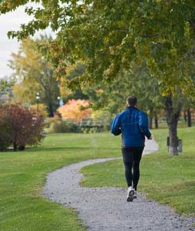

In addition to being more physically fit, people who exercise regularly tend to be happier and less stressed than people who don't.
Exercising just 30 minutes several times a week can reduce general anxiety and stress, and can even be an effective treatment for depression. A recent study conducted at the University of Colorado found that physical activity also could prevent stress to the immune system, lowering your risk for some bacterial and viral infections. Most notably, studies show that those who exercise have a more positive outlook on the world.
Fortunately, you don't need a lengthy workout to get in better shape and brighten your perspective on life. For those new to exercise, even as little as 10 minutes a day has been shown to relieve stress and promote a general sense of well-being.
Although many activities successfully ease stress, studies suggest the most effective exercises are rhythmic activities that work the major muscle groups and are performed at moderate or low intensity, such as jogging, swimming, cycling and walking. Research has also shown that mentally stimulating forms of exercise, such as martial arts, trigger positive mood changes, especially as a participant's skill level improves.
Consistent exercise is the most beneficial, so choose an activity you already enjoy and find time to do it regularly.
Do you have a favorite activity that helps you blow off steam and stay in shape? Share your insight by posting a comment below.
Click here to read more about the mental benefits of exercise.
|
 FOTOLIA Sometimes a solution can be as close as the nearest jogging (or biking, walking or rollerblading) path. |
|
|